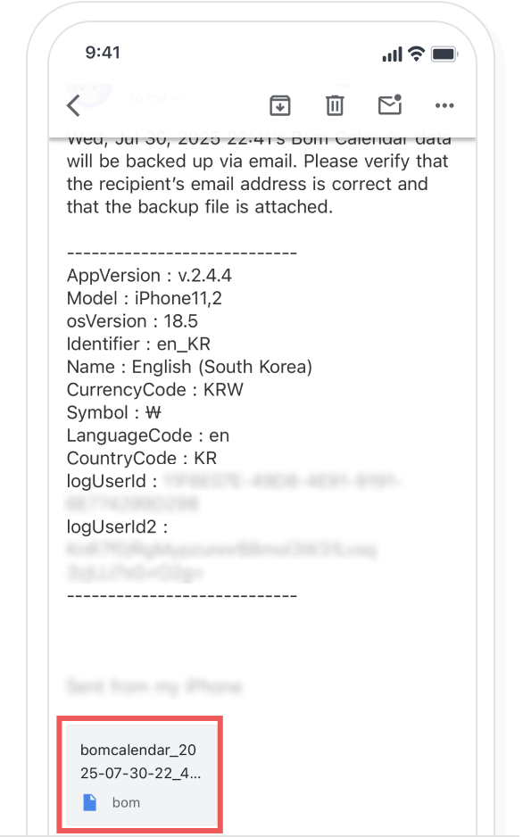
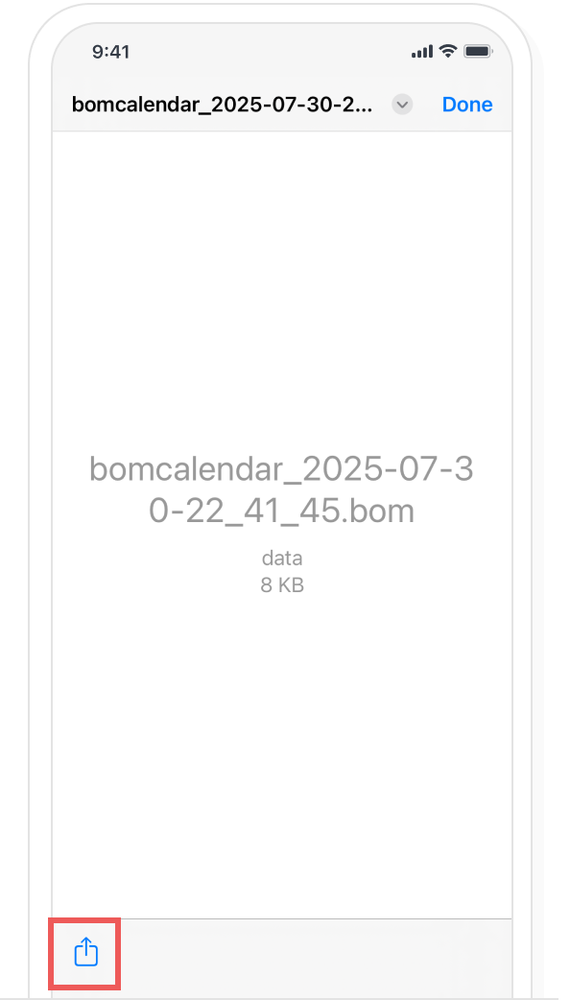
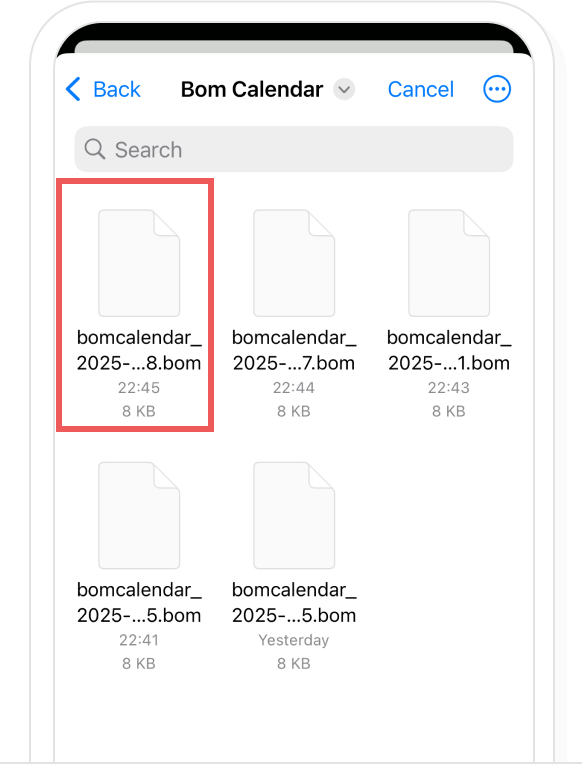

-
A. When restoring data from email
If you have backed up to email, select the email and then choose the attached back up data file.
Please select ‘Save to File’.
In the Bom Calendar Settings > ‘Personal/Security/Backup’, please select ‘Restore data’.

Please select the file to restore.
In the restore confirmation popup, select the ‘Yes, please restore’ button to complete the restoration.

-
B. When restoring data from the cloud
In the Bom Calendar Settings > ‘Personal/Security/Backup’, please select ‘Restore data’.
Please select the file to restore from your cloud.
In the restore confirmation popup, select the ‘Yes, please restore’ button to complete the restoration.